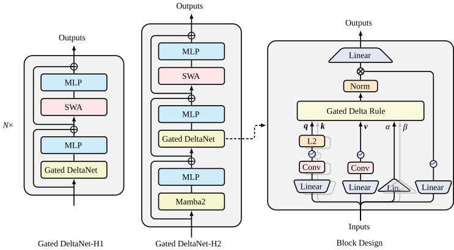

门控 Delta 网络：用 delta 规则改进 Mamba2
Gated Delta Networks: Improving Mamba2 with Delta Rule
GitHub star 为 2026-10-20 的快照。阅读状态、进度与收藏只保存在你的浏览器里。
逐节精读
这部分按论文（arXiv v3，即 ICLR 2025 定稿版）的章节顺序，用本站自己的话把整篇论文从头讲一遍；附录 A 的证明和附录 B 的消融实验，放进了正文讨论它们的小节。读懂某个概念需要的背景知识，会在第一次用到它之前单独讲清楚（青色框）。每个结论都尽量说出“因为什么、所以什么”。这篇论文在 arXiv 上以 CC BY 4.0 发布，所以原文图 1 直接使用原图；原文图 2、图 3 的数据取自论文 LaTeX 源文件里的作图坐标，由本站重新画成适合网页阅读的图；其余示意图是本站绘制的。标“推算”的数字是本站根据论文或代码算出来的，不是论文原话。每节末尾有英文原文的链接。
0 导读：这篇论文解决什么问题
标准 Transformer 的注意力在生成每个 token 时，都要回头看一遍之前的所有 token。为了不重复计算，推理系统把之前每个 token 的 key 和 value 存下来，这就是 KV 缓存。它带来两个随长度增长的代价：KV 缓存的大小和上下文长度成正比，生成每个 token 时要读的数据也和长度成正比；训练时，注意力的计算量和长度的平方成正比。上下文越长，这两笔账越难付。
线性注意力是最常见的替代方案。它把“回看全部历史”换成“维护一个固定大小的矩阵”：每读到一个 token，就把这个 token 的信息加进矩阵；需要输出时，用当前 token 的 query 去查这个矩阵。因为矩阵的大小不随长度变化，推理时每一步的成本是固定的；训练时又能写成矩阵乘法并行计算。代价也很直接：一个固定大小的矩阵装不下任意多的信息，所以在需要从上下文里准确找回某条信息的任务（检索）上，线性注意力一直明显不如 Transformer。
此前有两条改进思路。一条是门控，代表是 Mamba2：每一步先把整个矩阵乘上一个 0 到 1 之间的数，让旧信息逐渐淡去，给新信息腾地方。另一条是 delta 规则，代表是 DeltaNet：写入一个新的“键→值”之前，先用这个键把矩阵里已有的旧值读出来，只写入新旧之差，相当于对这一个键做定点改写。这篇论文的出发点是一个观察：两者恰好互补。门控能迅速清空记忆，却没法只忘掉某一条；delta 规则能精确地改某一条，却没法一下子清掉大量过时的内容。于是作者把两者乘在一起，得到门控 delta 规则，用它做序列混合层的模型叫 Gated DeltaNet（下文简称 GDN）。
想法本身只是一行公式，论文的第二个贡献在工程上：DeltaNet 之所以能大规模训练，靠的是一套把递归改写成矩阵乘的分块并行算法（WY 表示加 UT 变换）。作者把这套算法推广到带门控的情形，额外开销很小，训练吞吐和 DeltaNet 基本相同，比 Mamba2 低 2–3K token/s（在单张 H100 上大约 4%–5%，推算）。第三个贡献是两种混合架构：把 GDN 层和滑动窗口注意力层交替堆叠（GatedDeltaNet-H1），或者再加入 Mamba2 层（GatedDeltaNet-H2）。
实验在 13 亿参数、1000 亿 token 的统一条件下进行。GDN 在困惑度、常识推理、合成检索（S-NIAH）、真实数据检索、长度外推和 LongBench 上都超过了 Mamba2 和 DeltaNet；两个混合版本在真实数据检索上超过了同规模的 Transformer++。但纯 GDN 在真实数据检索上仍然明显落后于 Transformer（平均 30.6 对 37.0），这说明固定大小的记忆依然是硬约束，也解释了为什么后来工业界采用的都是混合架构：Qwen3-Next（2025-09）和 Qwen3.5（2026-02）用 3 层 GDN 配 1 层全注意力，Kimi Linear 把 GDN 的标量门换成逐通道的门。
读完这部分，你应该能回答这几个问题：
- 为什么线性注意力可以看成一个“状态是矩阵”的循环网络？这个矩阵为什么记不准？
- Mamba2 的门控和 DeltaNet 的 delta 规则分别怎样修改这个矩阵？各自缺什么？
- 门控 delta 规则为什么可以看成“带权重衰减的在线梯度下降”？
- 递归的更新规则怎样变成适合 GPU 的矩阵乘？WY 表示和 UT 变换在做什么？加了门控之后改了哪几处？
- 一个 GDN 层里的短卷积、L2 归一化、输出门各起什么作用？混合模型为什么还要留注意力层？
- 实验里的每个数字是在什么条件下测的，哪些结论站得住，哪些要打折扣？
1 引言：线性注意力为什么记不准
在标准 Transformer 里，第 \(t\) 个 token 的注意力输出是这样算的：用它的 query \(q_t\) 和之前每个 token 的 key \(k_i\) 做内积打分，经过 softmax 变成一组加起来等于 1 的权重，再用这组权重把各个 token 的 value \(v_i\) 加权平均：
softmax 的分母要对全部历史求和，所以每一步都离不开之前所有的 \(k_i\) 和 \(v_i\)。推理系统只好把它们一直存着（KV 缓存），第 \(t\) 步要把 \(t\) 对 key、value 全部读一遍。这就是 KV 缓存随长度线性增长、注意力总计算量随长度平方增长的来源。KV 缓存的详细来历见 vLLM 精读页 §2.2。
线性注意力怎样避开这笔账。如果去掉 softmax，直接把内积 \(k_i^\top q_t\) 当作权重（先不考虑归一化和对 \(q,k\) 的特征变换），输出就变成
第二个等号只是换了一下乘法的结合顺序，但意义很大：括号里的矩阵和当前的 \(q_t\) 无关，可以随着时间一步步累加。把它记作 \(S_t\)，就有 \(S_t=S_{t-1}+v_t k_t^\top\)，输出是 \(o_t=S_t q_t\)。这正是一个循环神经网络（RNN）：隐藏状态 \(S_t\) 是一个 \(d_v\times d_k\) 的矩阵，每读一个 token 更新一次，大小始终不变。推理时，第 \(t\) 步只需要更新并读一次这个矩阵，成本和 \(t\) 无关。
为什么记不准。可以把 \(S\) 想成一张“键→值”的查找表。写入一对 \((k,v)\) 就是加上外积 \(vk^\top\)；用 \(q\) 去读，得到 \(Sq=\sum_i v_i(k_i^\top q)\)，也就是每个已存的值按“它的键和 \(q\) 有多像”加权求和。假如所有键都是长度为 1、两两正交的向量，用其中某个键 \(k_j\) 去读，其他项的内积全是 0，恰好读出 \(v_j\)，查找表完美工作。问题在于，\(d_k\) 维空间里最多只有 \(d_k\) 个两两正交的方向。论文引言用的说法是：这种外积记忆能存的正交键值对的数量，以模型维度为上限；序列一旦比这个维度长，键之间必然有重叠，读出的就是好几个值的混合，作者称之为“记忆碰撞”（memory collision）。按上面的数字，一个头最多只有 128 个正交方向，而上下文动辄几千个 token。
两种已有的补救，和它们各自的缺口。
- 门控（Mamba2）。更新规则改成 \(S_t=\alpha_t S_{t-1}+v_tk_t^\top\)，其中 \(\alpha_t\in(0,1)\) 是由当前输入算出来的一个数。每一步先把整个状态乘以 \(\alpha_t\)，所有旧的键值关联按同一比例淡化，再写入新的。这样旧信息不会无限堆积，碰撞变少了。但它不分轻重：如果模型只想忘掉某一条关联，就只能连同其他所有关联一起按比例忘掉，记忆的利用率不高。
- delta 规则（DeltaNet）。写入新的键值对时，先把这个键上原有的旧值减掉，再写入新值，相当于用新的一对（部分地）替换旧的一对。它在合成的检索任务上表现很好。但它一次只改动一个键方向上的内容，没有办法快速清掉大量过时或无关的信息，比如在上下文切换、前面的内容整体作废的时候。DeltaNet 原论文发现它在真实任务上表现平平，作者认为原因就是缺少这种“清空”能力。
两者的长处正好是对方的短处，所以作者提出门控 delta 规则，把两者合成一条更新规则（第 3 节）。门控项 \(\alpha_t\to0\) 时，它能立刻清空记忆；\(\alpha_t\to1\) 时，它退化成纯粹的 delta 规则，只定点修改相关的内容、不影响其他信息。
剩下的难题是硬件效率。门控 delta 规则是一个逐 token 的递归，直接实现会很慢。DeltaNet 的作者之一（也是本文第一作者）此前用 WY 表示把 delta 规则并行化了；本文把那套算法推广到带门控的情形，保住了分块并行训练的效率（第 2.3、2.5、第 5 节详细讲）。最后，作者还把 GDN 层与滑动窗口注意力、Mamba2 层组合成混合模型，进一步提高训练效率和效果。
2 预备知识：线性注意力、Mamba2 与 DeltaNet
2.1 线性注意力：同一个计算的两张面孔
论文先写出不含归一化和特征变换的线性注意力：
\(d_k\)、\(d_v\) 是一个头里 query/key 和 value 的维度。把递归展开，同一个计算可以写成两种形式：
左边是逐个 token 的递归形式，右边是把整段长度为 \(L\) 的序列一次算完的并行形式：\(Q,K,V\) 是把各个位置的向量按行堆起来的矩阵，\(M\) 是因果掩码（第 \(i\) 行第 \(j\) 列在 \(j\le i\) 时为 1，否则为 0），\(\odot\) 是逐元素相乘。并行形式和 softmax 注意力几乎一样，只是少了 softmax。推理时用递归形式，每步成本固定；训练时如果用并行形式，又回到了 \(L\times L\) 的矩阵。两种形式各有毛病，2.3 节会讲训练实际用的第三种形式。
这种不加衰减的线性注意力在语言建模上比 Transformer 差得多。原因和第 1 节讲的一样：状态只加不减，旧信息永远留在里面，越积越多，碰撞越来越严重。常见的补救是给状态加一个衰减项，让它逐渐忘掉历史。
2.2 Mamba2：给状态乘一个随输入变化的衰减
论文以 Mamba2 为例（只看递归结构，忽略它具体的参数化方式）：
\(\alpha_t\) 是一个标量（每个头一个），由当前输入算出，所以叫“数据相关”的衰减。定义累积乘积 \(\gamma_j=\prod_{i=1}^{j}\alpha_i\)，展开递归得到
\(\gamma_t/\gamma_i=\alpha_{i+1}\alpha_{i+2}\cdots\alpha_t\) 正是第 \(i\) 个 token 写进去之后，到第 \(t\) 步为止被乘过的所有衰减系数。所以带衰减的线性注意力，相当于把因果掩码 \(M\) 换成一个“越久远越小”的衰减掩码 \(\Gamma\)。递归形式和这个并行形式之间的等价关系，Mamba2 论文称为状态空间对偶（SSD）。同样的递归结构还出现在 Gated RFA、xLSTM、Gated RetNet 等模型里；如果 \(\gamma\) 与输入无关（固定衰减），就退化成 RetNet 和 Lightning Attention；如果把标量衰减推广成逐通道的向量（外积结构），也仍然有高效的训练算法，GLA 等模型走的就是这条路。
衰减是连乘的，所以哪怕每一步只衰减一点点，积累起来也很快。推算一下：如果每一步 \(\alpha=0.99\)，100 步之后剩下 \(0.99^{100}\approx0.37\)；1000 步之后剩下 \(0.99^{1000}\approx4\times10^{-5}\)，几乎为零。要让一条信息在几千步之后还能读出来，\(\alpha\) 必须非常接近 1；可一旦 \(\alpha\) 接近 1，状态又会像不加衰减时那样不断堆积。门控模型就在“忘得太快”和“堆得太多”之间来回权衡，第 3.2 节 S-NIAH 实验里 Mamba2 在长序列上找不回 passkey，就是“忘得太快”的表现。
GatedDeltaNet 层）里是 \(\alpha_t=\exp\!\big(-e^{A_{\log}}\cdot\operatorname{softplus}(a_t+b_{dt})\big)\)：\(a_t\) 是输入经过一个线性层得到的每头一个标量，\(A_{\log}\) 和 \(b_{dt}\) 是每头一个的可学习参数；初始化时 \(e^{A_{\log}}\) 在 0 到 16 之间均匀取值，\(b_{dt}\) 让 softplus 的初始输出落在 0.001 到 0.1 之间。指数里的量总是负的，所以 \(\alpha_t\) 一定落在 0 和 1 之间。2.3 分块并行：训练时怎样把递归变成矩阵乘
递归形式和并行形式都不适合训练。递归形式要按顺序走 \(L\) 步，每一步只是一次外积和一次矩阵乘向量，GPU 的 Tensor Core（专门做矩阵乘矩阵的单元）几乎用不上；并行形式要算 \(L\times L\) 的矩阵，计算量和显存都随长度平方增长，失去了线性注意力的意义。于是线性注意力的训练普遍采用分块并行形式（chunkwise parallel form）：把序列切成长度为 \(C\) 的块，块与块之间按递归传递状态，块内部用矩阵乘一次算完。
记第 \(t\) 块的 query 矩阵为 \(Q_{[t]}\)（\(C\) 行），块开始时的状态为 \(S_{[t]}\)，块内第 \(r\) 个位置的 query 为 \(q_{[t]}^r\)。对普通线性注意力，块内第 \(r\) 个位置的输出等于“块开始时的状态读出的部分”加上“块内前 \(r\) 个位置贡献的部分”，写成矩阵形式是
这里的 \(M\) 是 \(C\times C\) 的因果掩码。两个式子全是矩阵乘：块间只传一个 \(d_v\times d_k\) 的状态（串行的步数从 \(L\) 降到 \(L/C\)），块内是 \(C\times C\) 规模的“小注意力”。加上衰减以后，只需把每个向量按块内的累积衰减缩放一下：
其中 \(\gamma_{[t]}^r\) 是块内从第 1 个位置到第 \(r\) 个位置的累积衰减。左箭头表示“衰减到块的开头”：\(\overleftarrow{q_{[t]}^r}=\gamma_{[t]}^r q_{[t]}^r\)，因为块开始时的状态传到第 \(r\) 个位置要衰减 \(\gamma_{[t]}^r\)；右箭头表示“衰减到块的末尾”：\(\overrightarrow{k_{[t]}^r}=(\gamma_{[t]}^C/\gamma_{[t]}^r)\,k_{[t]}^r\)，\(\overrightarrow{S_{[t]}}=\gamma_{[t]}^C S_{[t]}\)。论文指出，Mamba2 论文里的 SSD 分解算法和这个分块算法基本等价。
2.4 delta 规则：先读出旧值，再写入差值
delta 规则来自 1960 年 Widrow 与 Hoff 的自适应滤波工作，后来被 Schlag 等人（2021）用到线性 Transformer 上，得到 DeltaNet。它的写法是：
一步一步看。\(S_{t-1}k_t\) 是“用当前的键去查表读出来的旧值”\(v_t^{\text{old}}\)。第一项减掉 \(v_t^{\text{old}}k_t^\top\)，相当于把这个键上原来存的东西擦掉；第二项写入新值 \(v_t^{\text{new}}\)，它是当前 value 和旧值按写入强度 \(\beta_t\in(0,1)\) 的混合。\(\beta_t=1\) 时完全覆盖，\(\beta_t=0\) 时什么都不写。把式子整理一下，还有一种更直观的等价写法：
括号里是“想要的值减去当前能读出来的值”，即预测误差，这就是名字里 delta（差）的由来。普通线性注意力不管表里已经有什么，都把 \(v_t\) 整个加进去；delta 规则只把“还差多少”写进去。
delta 规则的状态转移矩阵是 \(I-\beta_tk_tk_t^\top\)。当 \(\|k_t\|=1\) 时，它对向量的作用很好理解：沿 \(k_t\) 方向的分量乘以 \(1-\beta_t\)，与 \(k_t\) 垂直的分量保持不变。也就是说它的特征值是：沿 \(k_t\) 方向为 \(1-\beta_t\)，其余 \(d_k-1\) 个方向都是 1。\(\beta_t=2\) 时它就是数值线性代数里的 Householder 反射（沿 \(k_t\) 方向翻个面），所以一般的 \(\beta_t\) 对应“广义 Householder 矩阵”。对比一下：Mamba2 的转移矩阵是 \(\alpha_tI\)，所有方向一起乘 \(\alpha_t\)；delta 规则是“单位矩阵减一个秩 1 矩阵”，只动一个方向。
这也解释了为什么 GDN 要对 \(k\) 做 L2 归一化：如果 \(\|k_t\|\) 不等于 1，沿 \(k_t\) 方向的特征值就变成 \(1-\beta_t\|k_t\|^2\)，可能小于 \(-1\)，状态会被越乘越大、训练发散。论文的脚注还提到，把 \(\beta_t\) 的范围放宽到 \((0,2)\)，允许出现负特征值，可以提升模型的“状态追踪”能力（第 8 节会解释这个词）；FLA 的实现里对应 allow_neg_eigval 选项，默认关闭。
DeltaNet 在联想回忆和语言建模上早就被证明比普通线性注意力强，但长期没人用，原因是它太慢：转移矩阵 \(I-\beta_tk_tk_t^\top\) 和输入有关，又不是对角矩阵，Mamba2 那种“把衰减乘进掩码”的技巧用不上。直到 Yang 等人（2024，NeurIPS）提出了硬件高效的分块训练算法，情况才改变。
2.5 DeltaNet 的分块算法：WY 表示与 UT 变换
先只看一个块内部。把 delta 规则的递归展开 \(r\) 步，块内第 \(r\) 个位置的状态是：
\(P\) 是块开始时的旧状态被一连串 Householder 型矩阵连乘的结果；\(H\) 是块内新写入的内容，每一次写入之后还要被后面的擦除操作修改。直接算这些 \(d_k\times d_k\) 矩阵的连乘既慢又占显存。数值线性代数里早有现成的办法：一串 Householder 矩阵的乘积，可以写成“单位矩阵减去若干个外积之和”，这叫 WY 表示（Bischof 与 Van Loan，1985）：
好处是不用再存 \(d_k\times d_k\) 的矩阵，只需要每个位置一个向量 \(w^r\)（\(d_k\) 维）和 \(u^r\)（\(d_v\) 维）。\(u^r\) 有一个直观的含义：它是第 \(r\) 个位置“真正写进去的值”，等于目标值 \(v^r\) 减去块内前面已经写入的内容对它的预测，再乘以 \(\beta^r\)。
不过 \(w\)、\(u\) 的递推仍然是逐个位置串行的。UT 变换（Joffrain 等，2006）把这个递推一次性写成矩阵：
\(\operatorname{strictLower}\) 表示只保留严格下三角部分（对角线及以上置零）。为什么是这个形式？把 \(u\) 的递推移项，得到 \(u^r+\beta^r\sum_{i<r}(k^{r\top}k^i)u^i=\beta^rv^r\)，对所有 \(r\) 堆起来恰好是 \(\big[I+\operatorname{strictLower}(\operatorname{diag}(\beta)KK^\top)\big]U=\operatorname{diag}(\beta)V\)。括号里是一个对角线全为 1 的下三角矩阵，求逆就是解一个下三角方程组。因为块长 \(C\) 只有几十（FLA 的默认值是 64），这个 \(C\times C\) 的求逆很便宜；而 \(KK^\top\)、\(TK\)、\(TV\) 都是矩阵乘，可以交给 Tensor Core。代回去，就得到 DeltaNet 的分块算法：
和 2.3 节普通线性注意力的分块公式对照一下就会发现：结构完全一样，只是把 \(V_{[t]}\) 换成了 \(U_{[t]}-W_{[t]}S_{[t]}^\top\)。这个矩阵的第 \(r\) 行可以理解为“修正后的 value”：块内第 \(r\) 个位置真正要写入的值，扣掉了块开始时的旧状态 \(S_{[t]}\) 对它的预测。FLA 的代码注释里直接把它叫作 v_new。
英文原文 §2 ↗ · 相关：FlashAttention 精读页（同样是“为了用上 Tensor Core 而重排计算”的思路）
3 门控 delta 规则：一行公式，两种能力
3.1 公式与两个极端
门控 delta 规则只是在 delta 规则的转移矩阵前面乘了一个门控系数：
右边的写法读起来更顺：先把整个旧状态乘以 \(\alpha_t\)（整体淡忘），再用当前的键去读这个淡忘后的状态，算出误差 \(v_t-\alpha_tS_{t-1}k_t\)，最后按强度 \(\beta_t\) 沿 \(k_t\) 方向写入误差（定点改写）。\(\alpha_t\in(0,1)\) 和 \(\beta_t\in(0,1)\) 都由当前输入算出，所以模型可以在每一步自己决定“忘多少”和“改多少”：
- \(\alpha_t\to0\)：旧状态几乎被清零，相当于开始一段新的记忆。遇到文档边界、话题切换时，这是 DeltaNet 做不到的。
- \(\alpha_t\to1\)：退化成纯 delta 规则，只修改和 \(k_t\) 相关的内容，其他记忆原样保留。这是 Mamba2 做不到的。
从特征值看更清楚。设 \(\|k_t\|=1\)，转移矩阵 \(\alpha_t(I-\beta_tk_tk_t^\top)\) 在 \(k_t\) 方向上的特征值是 \(\alpha_t(1-\beta_t)\)，在其余方向上是 \(\alpha_t\)。下图用 \(\alpha=0.9\)、\(\beta=0.8\) 这组示意值比较四种规则：
用一个最小的例子走一遍。取 \(d_k=2\)、\(d_v=1\)（每个值只是一个数），两个键是正交的单位向量 \(e_1=(1,0)\)、\(e_2=(0,1)\)。已经存了“\(e_1\to3\)”和“\(e_2\to5\)”，所以状态是行向量 \(S=[3,\,5]\)，用 \(e_1\) 读出 3，用 \(e_2\) 读出 5。现在要把 \(e_1\) 对应的值改成 7，看各种规则写完之后能读出什么：
| 规则（参数） | 写入后的 \(S\) | 用 \(e_1\) 读 | 用 \(e_2\) 读 | 结果 |
|---|---|---|---|---|
| 线性注意力 | [3+7, 5] = [10, 5] | 10 | 5 | 旧值 3 和新值 7 叠在一起，读错 |
| Mamba2（\(\alpha=0.5\)） | [1.5+7, 2.5] = [8.5, 2.5] | 8.5 | 2.5 | 新值里还混着一半旧值，\(e_2\) 的记忆也无辜地减半 |
| DeltaNet（\(\beta=1\)） | 误差 7−3=4，[3+4, 5] = [7, 5] | 7 | 5 | 精确覆盖，\(e_2\) 不受影响 |
| DeltaNet（\(\beta=0.5\)） | [3+0.5×4, 5] = [5, 5] | 5 | 5 | 新旧各占一半（软替换） |
| Gated DeltaNet（\(\alpha=1,\beta=1\)） | [7, 5] | 7 | 5 | 与 DeltaNet 相同：只改 \(e_1\) |
| Gated DeltaNet（\(\alpha=0,\beta=1\)） | 先清零为 [0, 0]，误差 7，得 [7, 0] | 7 | 0 | 先清空全部记忆，再写入新的一条 |
表里的每个数都可以手算核对（本站构造的例子）。最后两行说明了门控 delta 规则的灵活性：同一条规则，参数不同，行为可以从“只改一条”一直变到“全部重来”。
3.2 在线学习视角：每一步都在解一个小优化问题
作者借用了 Liu 等人（2024，Longhorn）提出的框架：把每一步的状态更新，看成一个“在线学习”问题的闭式解。每读到一个 token，模型都要从旧状态 \(S_{t-1}\) 出发找一个新状态 \(S_t\)，目标函数由两部分组成：一部分要求 \(S_t\) 别离旧状态太远（这样旧记忆才能保留），另一部分要求 \(S_t\) 能把新的键值对记好。不同的模型对应不同的目标函数（论文表 1）：
| 方法 | 在线学习目标（对 \(S_t\) 求最小） | 得到的更新 |
|---|---|---|
| 线性注意力 | \(\|S_t-S_{t-1}\|_F^2-2\langle S_tk_t,\,v_t\rangle\) | \(S_t=S_{t-1}+v_tk_t^\top\) |
| Mamba2 | \(\|S_t-\alpha_tS_{t-1}\|_F^2-2\langle S_tk_t,\,v_t\rangle\) | \(S_t=\alpha_tS_{t-1}+v_tk_t^\top\) |
| Longhorn | \(\|S_t-S_{t-1}\|_F^2+\beta_t\|S_tk_t-v_t\|^2\) | \(S_t=S_{t-1}(I-\epsilon_tk_tk_t^\top)+\epsilon_tv_tk_t^\top,\ \epsilon_t=\frac{\beta_t}{1+\beta_tk_t^\top k_t}\) |
| DeltaNet | \(\|S_t-S_{t-1}\|_F^2-2\langle S_tk_t,\,\beta_t(v_t-S_{t-1}k_t)\rangle\) | \(S_t=S_{t-1}(I-\beta_tk_tk_t^\top)+\beta_tv_tk_t^\top\) |
| Gated DeltaNet | \(\|S_t-\alpha_tS_{t-1}\|_F^2-2\langle S_tk_t,\,\beta_t(v_t-\alpha_tS_{t-1}k_t)\rangle\) | \(S_t=S_{t-1}\big(\alpha_t(I-\beta_tk_tk_t^\top)\big)+\beta_tv_tk_t^\top\) |
表格依据原文表 1 改写。原表 Longhorn 一行的目标函数写作“\(-\beta_t\|S_tk_t-v_t\|^2\)”，按 Longhorn 原意应是加上回归误差（最小化误差），这里按加号写；原表 Longhorn 的 \(\beta\) 是向量，论文为了方便简化成了标量。
怎么读这张表？以 DeltaNet 一行为例，对 \(S_t\) 求导并令导数为零：\(2(S_t-S_{t-1})-2\beta_t(v_t-S_{t-1}k_t)k_t^\top=0\)，立刻得到 \(S_t=S_{t-1}+\beta_t(v_t-S_{t-1}k_t)k_t^\top\)，正是 delta 规则。其他行也都是这样一步求出来的。由此可以看出两类差别：
- 第一项（别离旧状态太远）决定“能不能忘”。线性注意力和 DeltaNet 要求 \(S_t\) 贴近 \(S_{t-1}\)，这让记忆得以保留；但当状态里已经塞满了信息时，每个状态都是许多条信息的叠加，这种“保留”反而有害，精确检索变得困难。Mamba2 和 Gated DeltaNet 把它改成贴近 \(\alpha_tS_{t-1}\)，相当于允许状态向“衰减后的旧状态”靠拢，从而可以有选择地忘掉无关信息。
- 第二项（记住新内容）决定“记得准不准”。线性注意力和 Mamba2 用的是负内积 \(-\langle S_tk_t,v_t\rangle\)：它奖励“读出来的值和 \(v_t\) 方向一致”，而且越大越好，于是不管已经存了什么，都把 \(v_t\) 整个加进去。Longhorn 用的是回归误差 \(\|S_tk_t-v_t\|^2\)：它只关心读出来的值和目标差多少。DeltaNet 的目标虽然写成内积形式，但内积的对象是误差 \(\beta_t(v_t-S_{t-1}k_t)\)，效果上也是在减小回归误差。论文据此认为，在上下文联想回忆上，（门控）delta 规则在原理上优于 Mamba2。
论文脚注补充了 Longhorn 与 DeltaNet 的理论区别：两者优化的是同一个回归目标，Longhorn 用隐式在线学习求出全局最优的闭式解（所以多了一个归一化因子 \(\epsilon_t\)），DeltaNet 则只沿梯度方向显式地走一步。
“快速权重”（fast weights）是一个老想法：网络里除了训练好就固定不变的“慢权重”，还有一组在读输入的过程中不断被改写的“快权重”。线性注意力的状态 \(S\) 正是这样一个快权重矩阵：模型参数（慢权重）决定怎样从输入算出 \(k,v,\beta,\alpha\)，而 \(S\) 在每次推理时从零开始，随着读入的 token 被一步步写入。近年的“测试时训练”（test-time training，TTT）也是同一个意思：推理时还在对某个小模型做梯度下降。
在这个视角下，delta 规则就是对在线回归损失 \(\mathcal{L}(S_t)=\tfrac12\|S_tk_t-v_t\|^2\) 做一步随机梯度下降（SGD）：
\(\beta_t\) 就是自适应的学习率。门控 delta 规则则相当于在这一步 SGD 里加了自适应的权重衰减（weight decay）\(\alpha_t\)：每步先把权重整体缩小一点，再做梯度更新。权重衰减是深度学习里最常用的正则化手段之一。论文还提到，同期的 Titans（Behrouz 等，2024）也在“测试时 SGD”式的 RNN 更新里加了权重衰减，并验证了它的效果。
4 案例研究：在“大海捞针”里看两种机制的分工
“大海捞针”（Needle-In-A-Haystack）是检验长上下文检索最直接的方法：在一段很长的无关文字（“干草堆”）里插入一句“针”，比如“某个特殊的神奇数字是 7364918”，最后问模型这个数字是多少。RULER（Hsieh 等，2024）把它整理成一组难度不同的标准任务。论文用的是其中三个单针（Single NIAH）任务：
- S-NIAH-1（passkey 检索）：干草堆是一句话反复重复的合成文字，几乎没有信息量，模型只需要把针长期保留下来。
- S-NIAH-2（文章里找数字）：干草堆换成真实的文章，模型读的每一段都可能“看起来有用”，必须把无关内容过滤掉，才不会把针挤掉。
- S-NIAH-3（文章里找 UUID）：针的值从数字换成 UUID（一长串十六进制字符），要记住的内容本身更复杂。
所有模型都只做过预训练、没有经过指令微调，直接零样本作答。模型的训练长度是 4K，所以表中 8K 的结果已经超出了训练长度。
论文从表 2 得出三个观察，每一个都对应一种机制的作用：
- 衰减伤害长期保留。在最简单的 S-NIAH-1 上，干草堆几乎不含信息，只考验能不能把针一直留住。DeltaNet 在所有长度上都接近满分（8K 时 98.8）；Mamba2 过了 2K 就明显下滑，到 8K 只剩 30.4，因为它对历史衰减得太快；Gated DeltaNet 也有衰减，但有 delta 规则帮忙，下滑没那么严重，8K 时 91.8。
- 门控帮助过滤。在 S-NIAH-2、S-NIAH-3 里，干草堆是真实文章，模型会把所有可能有用的东西都往状态里写。状态大小固定，如果不清理，信息就会互相叠加、无法分辨（记忆碰撞）。没有门控的 DeltaNet 在 2K 时就掉到 45.6（S-NIAH-2），而 Mamba2 和 Gated DeltaNet 靠门控过滤掉了无关内容，2K 时都还在 98 以上；到 4K，Gated DeltaNet 是 92.2，Mamba2 只有 56.2。
- delta 规则帮助记住复杂内容。S-NIAH-3 要记的是 UUID。Mamba2 的成绩掉得最快，4K 时只剩 4.6；Gated DeltaNet 在 2K 时还有 84.2，4K 时 27.6。作者认为这验证了 delta 规则更强的记忆能力。
把三条合起来看：DeltaNet 擅长“保留”、不擅长“过滤”，Mamba2 正好相反。Gated DeltaNet 在 S-NIAH-2、S-NIAH-3 的全部 7 个格子里都是三者中最好的；在 S-NIAH-1 的 4 个格子里，它都不如几乎满分的 DeltaNet，最明显的是 2K（88.4，另外两者都在 96 以上），但在 4K、8K 上远好于 Mamba2（8K 时 91.8 对 30.4）。也就是说，加上门控之后，GDN 在纯“保留”任务上付出了一点代价，换来了过滤能力（本站据表 2 归纳）。
- 表里只有三个纯循环模型，没有 Transformer 和混合模型；它说明的是“三种更新规则之间的相对强弱”，不能拿来和注意力比较。
- S-NIAH-2 在 8K 时，最好的 Gated DeltaNet 也只有 29.6。超出训练长度、又有真实文章干扰时，固定大小状态的检索能力仍然很有限。
- S-NIAH-3 的描述在不同地方不一致：v2/v3 的表 2 写的是 “uuid in haystack”，v1 的表和 v3 附录 B.1 写的是 “word”（基于单词的针）。按 RULER 的任务定义，这一项的值是 UUID，本页按 UUID 讲解。
- 结论来自单次训练的 1.3B 模型。表中个别格子（比如 GDN 在 S-NIAH-1 的 2K 低于 4K、8K）并不单调，提示单个数字有一定噪声。
5 训练算法：把门控塞进 WY 表示
和 2.5 节一样，先在一个块内部展开门控 delta 规则的递归：
第一项很简单。\(\alpha\) 是标量，可以从连乘里提出来，所以 \(F_{[t]}^r=\gamma_{[t]}^rP_{[t]}^r\)：就是 DeltaNet 的 \(P\) 乘上块内的累积衰减。旧状态部分不需要任何新的推导。
第二项要改一下 WY 表示。论文附录 A 用数学归纳法证明了带衰减的 WY 表示（为简洁只写第一个块，下标省略）：
和 DeltaNet 的 \(u\) 相比，唯一的变化是：第 \(i\) 个位置写入的内容，到第 \(t\) 步时已经衰减了 \(\gamma_t/\gamma_i\)，所以在计算“前面写入的内容对当前位置的预测”时，要乘上这个衰减比例。归纳的关键一步是：在第 \(t+1\) 步把 \(\alpha_{t+1}\) 乘进去，所有的 \(\gamma_t/\gamma_i\) 都变成 \(\gamma_{t+1}/\gamma_i\)，新写入项的系数恰好是 \(\gamma_{t+1}/\gamma_{t+1}=1\)，形式保持不变。对应到 UT 变换，只需要在求逆之前，给 \(KK^\top\) 逐元素乘上衰减掩码 \(\Gamma\)：
最后，仿照 2.3 节 Mamba2 对线性注意力的扩展方式，在 DeltaNet 的分块公式里加上衰减：
箭头的含义和 2.3 节相同：\(\overleftarrow{q_{[t]}^r}=\gamma_{[t]}^rq_{[t]}^r\) 与 \(\overleftarrow{w_{[t]}^r}=\gamma_{[t]}^rw_{[t]}^r\) 衰减到块的开头，\(\overrightarrow{k_{[t]}^r}=(\gamma_{[t]}^C/\gamma_{[t]}^r)k_{[t]}^r\) 与 \(\overrightarrow{S_{[t]}}=\gamma_{[t]}^CS_{[t]}\) 衰减到块的末尾。
额外开销有多少？和 DeltaNet 相比，新增的只有几件事：块内累积衰减 \(\gamma\) 的前缀积，若干向量的逐元素缩放，以及 \(C\times C\) 的衰减掩码 \(\Gamma\)。这些都是逐元素运算，远小于矩阵乘的计算量。所以第 7.6 节会看到，Gated DeltaNet 和 DeltaNet 的训练吞吐几乎一样（2K×16 时 46.1 对 45.9 千 token/秒）。
chunk_gated_delta_rule 先在块内对 \(\log\alpha_t\) 做前缀和（chunk_local_cumsum），所有的 \(\gamma_r/\gamma_i\) 都通过 \(\exp(g_r-g_i)\) 计算；因为 \(i\le r\) 时 \(g_r-g_i\le0\)，结果总在 0 和 1 之间，不会溢出。FLA 内核的默认块长是 64。官方 NVlabs 仓库的 README 也建议直接使用 FLA 的内核，理由是更快且支持变长序列（varlen）训练。6 模型设计：一个 GDN 块长什么样，混合模型怎么搭
6.1 一个 Gated DeltaNet 块
整体结构沿用 Llama：每层先是一个序列混合层（token mixer），再接一个 SwiGLU 前馈层（MLP），两者都带残差连接。GDN 做的只是把自注意力换成门控 delta 规则。论文图 1 右侧画出了块内部的设计：

逐个部件说明它为什么在那里：
- 短卷积（short convolution）。对 \(q,k,v\) 各做一次逐通道的因果卷积，卷积核只看最近几个 token（官方代码和 FLA 里核长都是 4）。论文 §3.4 指出，线性 Transformer 不擅长建模局部的移位和比较；短卷积让每个位置的 \(q,k,v\) 混入前几个 token 的信息，弥补这一点。GDN 层本身不用 RoPE 之类的位置编码，位置信息来自递归的顺序、衰减和这个短卷积。
- L2 归一化。只对 \(q,k\) 做。论文说是为了训练稳定，2.4 节已经解释了原因：\(\|k\|=1\) 时，\(I-\beta kk^\top\) 沿 \(k\) 方向的特征值 \(1-\beta\) 落在 0 到 1 之间，状态不会被放大。
- \(\alpha,\beta\) 只用线性投影。每个头一个标量；\(\beta\) 经过 sigmoid 落在 (0,1)，\(\alpha\) 用 Mamba2 的参数化（见 2.2 节的代码说明）。
- 输出归一化和输出门。沿用 RetNet（Sun 等，2023）的做法：先对 delta 规则的输出做归一化，再乘以一个由输入算出的门（SiLU 激活），然后做输出投影。FLA 里这两步被融合成一个内核
FusedRMSNormGated。
6.2 消融：哪些部件不能省（附录表 S.1）
消融实验用 4 亿参数的模型、在 FineWeb-Edu 的同一子集上训练 150 亿 token。“平均困惑度”和“平均准确率”分别是第 7.2 节那组语言建模困惑度和常识推理准确率的平均（原文没有列出平均了哪几项，这里照原文的说法）。基线（L2 归一化、SiLU、头维 128）是 27.35 / 47.26。
| 改动 | 平均困惑度 ↓ | 平均准确率 ↑ | 本站解读 |
|---|---|---|---|
| 基线：Gated DeltaNet，头维 128 | 27.35 | 47.26 | |
| 换成不带门控的 delta 规则（原文 “naive Delta Rule”） | 30.87 | 45.12 | 最大的退步：门控本身最重要（本站把 naive 理解为去掉 \(\alpha\)） |
| 去掉短卷积 | 28.95 | 46.16 | 明显变差 |
| 去掉输出门 | 29.12 | 45.46 | 明显变差 |
| 去掉输出归一化 | 27.55 | 47.07 | 影响很小 |
| L1 归一化 + ReLU / 1+ELU / SiLU | 30.79 / 30.34 / 30.18 | 45.92 / 46.05 / 46.09 | L1 归一化一律差很多 |
| L2 归一化 + ReLU / 1+ELU | 27.67 / 27.58 | 46.94 / 47.17 | L2 下特征映射影响不大，SiLU 略好 |
| 头维 64 | 28.31 | 46.35 | 头太小，状态容量不够 |
| 头维 256 | 27.13 | 47.38 | 比 128 略好，但更慢 |
作者的结论是：短卷积和输出门对性能至关重要，输出归一化只带来很小的提升；和 DeltaNet 论文的发现一致，L2 归一化是必需的，特征映射（激活函数）的选择影响较小，但 SiLU 始终最好；头维 128 是性能和计算效率之间的最佳折中。头维的结果有一个直观解释：状态大小是 \(d_k\times d_v\)，头维从 64 增到 256，单个头能存的正交键值对从 64 条增到 256 条，困惑度随之下降；但状态越大，每步要读写的数据越多、分块计算越重，所以作者停在 128。
6.3 混合模型：为什么还要留注意力层
滑动窗口注意力是 softmax 注意力的一个变体：每个 token 只看自己前面固定个数（窗口大小，比如 2048）的 token。窗口以内，它和标准注意力一样能精确地比较、检索任意两个 token；窗口以外的内容它完全看不到。所以它的 KV 缓存有上限（最多存窗口那么多个 token），计算量随长度线性增长。它和循环层的长处正好互补：循环层的状态覆盖整个历史但记不准，SWA 在近处记得准但看不远。
论文 §3.4 引用 Arora 等人（2024）的结论指出，线性 Transformer 在建模局部移位和比较上有局限，固定大小的状态也让检索任务变得困难。于是作者仿照 Griffin（De 等，2024）和 Samba（Ren 等，2024）的做法，把循环层和 SWA 层交替堆叠：
- GatedDeltaNet-H1：GDN 层和 SWA 层交替（每层后面都接 MLP），也就是 1:1 混合。官方代码里 H1 配置用
gated_delta_per_layer=2实现：偶数层是 GDN，奇数层是窗口为 2048 的注意力。 - GatedDeltaNet-H2：Mamba2、GDN、SWA 三种层依次排列，1:1:1。
附录表 S.2 比较了三种层的四种排列顺序（5 亿参数、150 亿 token）。平均准确率依次是：GDN+SWA+Mamba2 为 47.88，GDN+Mamba2+SWA 为 47.54，Mamba2+SWA+GDN 为 47.92，Mamba2+GDN+SWA 为 48.73（Wikitext 困惑度也最低，23.54）。作者据此选定了 H2 的顺序 Mamba2 → GDN → SWA。最好与最差的差距是 1.19 个百分点（推算），而且每种排列只训练了一次，这个排序结论的把握不算大。
7 实验：同样的预算下，GDN 赢在哪里、输在哪里
7.1 实验是怎么设计的
对手。纯循环模型有 RetNet、HGRN2、Mamba（下文也叫 Mamba1）、Mamba2、DeltaNet；注意力或混合模型有 Transformer++（Llama 式的 Transformer：RoPE、SwiGLU、RMSNorm）和 Samba（Mamba1 与滑动窗口注意力的混合）。
统一的训练条件。为了公平，所有模型都由作者在完全相同的条件下从头训练：13 亿参数，FineWeb-Edu 数据集中采样的 1000 亿 token；AdamW 优化器，峰值学习率 \(4\times10^{-4}\)，权重衰减 0.1，梯度裁剪 1.0；余弦学习率，前 10 亿 token 预热；每批 50 万 token；Llama2 分词器（词表 32,000）；训练长度 4K，Samba 和两个混合模型的滑动窗口为 2K。
评测。常识推理沿用 Mamba 论文的那组基准，用 lm-evaluation-harness 零样本评测；合成检索用 RULER 的 S-NIAH（第 4 节）；真实数据检索沿用 Arora 等人（2024）的设置，因为模型没有经过指令微调，用的是“完形填空式”的提示，让任务更接近下一个词预测；长上下文理解用 LongBench 的 14 个任务；另外还测了长度外推和训练吞吐。
7.2 语言建模与常识推理（原文表 3）
| 模型（1.3B / 100B token） | Wikitext 困惑度 ↓ | LAMBADA 困惑度 ↓ | LAMBADA 准确率 ↑ | 8 项准确率平均 ↑ |
|---|---|---|---|---|
| RetNet | 19.08 | 17.27 | 40.52 | 52.02 |
| HGRN2 | 19.10 | 17.69 | 39.54 | 51.79 |
| Mamba | 17.92 | 15.06 | 43.98 | 53.12 |
| Mamba2 | 16.56 | 12.56 | 45.66 | 54.89 |
| DeltaNet | 17.71 | 16.88 | 42.46 | 52.14 |
| Gated DeltaNet | 16.42 | 12.17 | 46.65 | 55.32 |
| Transformer++ | 18.53 | 18.32 | 42.60 | 52.25 |
| Samba | 16.13 | 13.29 | 44.94 | 54.00 |
| Gated DeltaNet-H1 | 16.07 | 12.12 | 47.73 | 56.40 |
| Gated DeltaNet-H2 | 15.91 | 12.55 | 48.76 | 56.18 |
8 项准确率是 LAMBADA、PIQA、HellaSwag、WinoGrande、ARC-e、ARC-c、SIQA、BoolQ；平均值与原文 Avg. 一栏相同（本站用 GDN 一行验算过：八项之和 442.58，除以 8 得 55.32）。完整的逐项数字见原文表 3。
在纯循环模型里，GDN 的两项困惑度都最低，平均准确率也最高（55.32）。但要注意差距的大小：它比 Mamba2 只高 0.43 个百分点，Wikitext 困惑度只低 0.14；在逐项成绩里，Mamba2 的 ARC-e（72.47 对 71.21）、Mamba 的 BoolQ（61.13 对 60.24）、RetNet 的 SIQA（40.78 对 40.63）都比 GDN 高。真正拉开差距的是和 DeltaNet 的比较：平均准确率高 3.18，LAMBADA 困惑度从 16.88 降到 12.17，这说明给 delta 规则加上门控，对语言建模的帮助很大。两个混合模型更进一步，平均准确率分别达到 56.40 和 56.18。正文提到表 3 包含 400M 和 1.3B 两个规模，但实际表中只有 1.3B 的结果。
一个值得留意的现象：这里的 Transformer++ 困惑度比 Mamba2、GDN 都差不少（Wikitext 18.53），平均准确率 52.25 也低于多数循环模型。这是“这套统一设置下”的结果，论文没有说明是否为每种架构单独调过学习率，所以不宜据此认为循环模型在语言建模上普遍胜过 Transformer。
7.3 真实数据上的检索（原文表 4）
Arora 等人（2024）专门挑出一组需要从上下文里原样找回信息的真实任务：SWDE 从网页 HTML 里抽取属性（比如电影的导演），FDA 从 PDF 文档里抽取键值对，SQuAD、TriviaQA、NQ、DROP 是阅读理解问答。它们的共同点是：答案就写在输入里，模型只要能“找回来”就能答对。循环模型的状态大小固定，读完一整篇文档以后，某个具体的字段很可能已经被挤掉了，所以这类任务最能暴露循环模型的短板。论文把输入都截断到 2K token，比训练长度 4K 还短，考的是训练长度以内的记忆管理。
| 模型 | SWDE | SQuAD | FDA | TriviaQA | NQ | DROP | 平均 |
|---|---|---|---|---|---|---|---|
| RetNet | 14.0 | 28.5 | 7.0 | 54.4 | 16.2 | 17.3 | 22.9 |
| HGRN2 | 8.3 | 25.3 | 4.8 | 51.2 | 14.2 | 16.9 | 20.1 |
| Mamba | 9.8 | 25.8 | 3.7 | 54.3 | 14.9 | 17.4 | 21.0 |
| Mamba2 | 19.1 | 33.6 | 25.3 | 61.0 | 20.8 | 19.2 | 29.8 |
| DeltaNet | 17.9 | 30.9 | 18.4 | 53.9 | 17.3 | 18.6 | 26.2 |
| Gated DeltaNet | 25.4 | 34.8 | 23.7 | 60.0 | 20.0 | 19.8 | 30.6 |
| Transformer++ | 29.5 | 38.0 | 52.2 | 58.3 | 22.5 | 21.6 | 37.0 |
| Samba | 33.0 | 39.2 | 50.5 | 57.7 | 23.5 | 20.2 | 37.3 |
| Gated DeltaNet-H1 | 35.6 | 39.7 | 52.0 | 60.1 | 24.6 | 22.2 | 39.0 |
| Gated DeltaNet-H2 | 38.2 | 40.4 | 50.7 | 63.3 | 24.8 | 23.3 | 40.1 |
这张表有三层信息。第一，纯循环模型和 Transformer 之间有明显的差距：最好的纯循环模型 GDN 平均 30.6，Transformer++ 是 37.0；差距最大的是 FDA，GDN 23.7，Transformer++ 52.2，从长文档里抽取精确的键值对，正是固定大小状态最吃亏的地方。第二，混合模型反超了纯注意力：H1、H2 的平均分 39.0、40.1 都高于 Transformer++。第三，在纯循环模型内部，DeltaNet 虽然在合成检索上很强，这里却不如 Mamba2（26.2 对 29.8），和第 4 节 S-NIAH-2/3 的观察一致：真实文本里干扰多，没有门控就清理不了记忆。GDN 同时超过了这两者，但只比 Mamba2 高 0.8。
为什么这里的差距比 S-NIAH 小得多？作者的解释是：没有经过指令对齐的小模型容易陷入重复输出，而这是这类任务里最主要的错误来源（Arora 等人的附录 E 有分析）；重复错误基本和更新规则无关，所以不同循环模型之间的差别被冲淡了。
7.4 长度外推（原文图 2）
所有模型只在 4K 长度上训练过。作者在六个长文本数据集（GovReport、QMSum、NarrativeQA、Qasper、CodeParrot、PG19）上测了 4K 到 20K 长度的困惑度，看模型能否在比训练长度长 5 倍的输入上保持稳定。原文图 2 是 6 个小图，每个数据集一张；下面先给出本站按原文作图数据算出的六个数据集的平均困惑度，再列出 20K 处的逐项数字。
| 20K 处的困惑度 | Mamba1 | DeltaNet | Mamba2 | Samba | GDN | GDN-H1 | GDN-H2 |
|---|---|---|---|---|---|---|---|
| GovReport | 8.01 | 7.36 | 8.16 | 6.70 | 6.36 | 6.34 | 6.26 |
| QMSum | 15.94 | 14.40 | 14.41 | 14.21 | 12.96 | 12.80 | 12.79 |
| NarrativeQA | 18.30 | 18.63 | 20.37 | 16.30 | 16.54 | 16.31 | 17.03 |
| Qasper | 18.61 | 13.67 | 17.12 | 14.57 | 14.37 | 13.67 | 13.99 |
| CodeParrot | 12.19 | 8.51 | 8.03 | 6.07 | 6.75 | 5.75 | 6.03 |
| PG19 | 14.65 | 13.85 | 12.71 | 13.42 | 13.35 | 12.75 | 12.67 |
论文的总结是：GDN 在各数据集上的总体困惑度是循环模型中最低的；外推的结果有好有坏，但 GDN 相对更稳，说明它的记忆管理更好；混合模型借助注意力处理局部上下文，减轻了循环部分的记忆负担，因此进一步改善。逐项看，“有好有坏”是实情：在纯循环模型里，GDN 在 GovReport、QMSum、NarrativeQA、CodeParrot 上最好，但在 Qasper 上不如 DeltaNet（14.37 对 13.67），在 PG19 上不如 Mamba2（13.35 对 12.71）。
7.5 长上下文理解：LongBench（原文表 5）
| 模型 | NQA | QQA | MFQ | TREC | TQA | SAMSum | LCC | RB-P | 14 项平均 |
|---|---|---|---|---|---|---|---|---|---|
| Mamba | 13.0 | 10.1 | 20.4 | 23.1 | 21.9 | 11.2 | 17.9 | 19.0 | 14.6 |
| DeltaNet | 12.9 | 10.8 | 21.5 | 15.5 | 23.3 | 11.6 | 17.6 | 20.3 | 13.6 |
| Mamba2 | 11.1 | 11.3 | 18.6 | 13.0 | 23.6 | 8.4 | 17.9 | 20.6 | 13.5 |
| Gated DeltaNet | 14.1 | 14.0 | 23.3 | 30.0 | 22.4 | 23.0 | 18.7 | 22.1 | 16.6 |
| Transformer++ | 11.8 | 9.3 | 10.0 | 16.9 | 13.5 | 3.9 | 17.2 | 18.7 | 11.0 |
| Samba | 12.5 | 12.9 | 25.4 | 20.0 | 22.7 | 22.8 | 18.1 | 21.1 | 15.9 |
| Gated DeltaNet-H1 | 14.5 | 12.3 | 26.6 | 33.5 | 23.9 | 26.8 | 15.5 | 19.2 | 17.8 |
| Gated DeltaNet-H2 | 12.7 | 13.0 | 27.1 | 40.5 | 22.7 | 27.9 | 19.9 | 22.1 | 18.4 |
只摘了 8 项：单文档问答 NarrativeQA、Qasper、MultiFieldQA，少样本学习 TREC、TriviaQA、SAMSum，代码 LCC、RepoBench-P。多文档问答和摘要的 6 项以及 RetNet（平均 13.2）、HGRN2（13.5）两行见原文表 5。
在纯循环模型里，GDN 的平均分 16.6 明显领先（其次是 Mamba 的 14.6）。论文说它的优势集中在单文档问答、少样本上下文学习和代码三类任务上，分别对应检索、上下文学习和状态追踪能力。前两类的对应关系比较直接；“代码任务体现状态追踪能力”是作者的解读，表里并没有专门检验状态追踪的任务。少样本任务的差距最大：TREC 上 GDN 30.0、Mamba2 13.0，SAMSum 上 23.0 对 8.4。
7.6 训练吞吐（原文图 3）
最后是速度。作者在单张 H100 上测量 1.3B 模型的训练吞吐（每秒处理的 token 数），比较四种“序列长度 × 批大小”组合，每一步处理的总 token 数都是 32K。
从图中可以读出三件事：
- 门控几乎是免费的。GDN 和 DeltaNet 的吞吐基本相同（2K×16 时 46.1 对 45.9，16K×2 时 45.9 对 45.2），印证了第 5 节的分析：加门控只多了些逐元素运算。
- 比 Mamba2 慢一点。四种设置下 Mamba2 比 GDN 快 2.0、2.5、2.4、2.2 千 token/秒，相对慢 4.2%–5.2%（推算）。作者把原因归结为 delta 规则的转移矩阵表达能力更强（“单位矩阵减秩 1”，而不是对角矩阵），计算更复杂，比如多了 2.5 节里那个 \(C\times C\) 的三角求逆。
- 混合反而更快。2K 长度下，用 FlashAttention-2 的 Transformer++ 最快（55.0）。把一部分循环层换成窗口 2K 的 SWA 层，混合模型的吞吐就高于纯循环模型：Samba 快于 Mamba，GDN-H1（54.6–52.5）和 GDN-H2（50.0–49.0）快于 GDN。GDN-H1 在所有长度上都保持了很高的吞吐，即使在 2K 的短序列上也只比 Transformer++ 慢 0.4；到 16K×2 时，它的吞吐是 Transformer++ 的 1.98 倍（推算）。
7.7 结果的份量
把上面所有结果放在一起，下面逐条说明它们是在什么条件下得到的、能支持多强的结论：
- 对照是配平的，但只有一次训练。所有模型都由作者用同一份数据、同样的 token 数、同一套超参从头训练，这比直接引用各论文的数字可靠得多。但每个模型只训练了一次，没有报告不同随机种子的方差；所有架构共用同一个峰值学习率 \(4\times10^{-4}\)，没有说明是否各自调过。常识推理上 GDN 对 Mamba2 只领先 0.43 个百分点，这么小的差距很可能落在随机波动之内；S-NIAH、LongBench 少样本任务上十几到几十个点的差距则不太可能是噪声。另外，“1.3B”是名义上的规模，论文没有列出每个模型的精确参数量。
- 规模很小。主实验是 1.3B 参数、100B token，消融是 400M、500M 参数、15B token。在这个规模上成立的排序，放大以后是否保持，论文本身无法回答。后来 Qwen3-Next（80B，15T token）等工业模型采用 GDN，可以看作一种间接的验证，但那些模型同时改了很多别的东西（见下一节）。
- 检索类结论的适用范围。S-NIAH 是零样本的合成任务，只测到 8K（S-NIAH-3 只到 4K），而且只比较了三个纯循环模型；真实检索任务的输入截断到 2K；LongBench 没有说明截断方式。纯 GDN 在真实检索上仍比 Transformer++ 低 6.4 分，FDA 上低 28.5 分（推算），这才是“固定大小状态有上限”的直接证据。
- 效率只测了训练吞吐。图 3 是单张 H100 上 1.3B 模型的训练速度，没有测推理：没有解码延迟、没有预填充速度、没有显存占用，也没有批量推理时的吞吐。而线性注意力最大的卖点恰恰在推理（KV 缓存不随长度增长）。Transformer++ 用的是 FlashAttention-2，在 H100 上已有更快的 FlashAttention-3（见 FlashAttention-3 精读页）；各模型用的内核实现（Triton 还是 CUDA、是否同等优化）也没有交代。所以“比 Mamba2 慢 2–3K token/s”“混合比 Transformer 快”只说明这一套实现、这一个硬件上的情况。
- 混合模型和 Transformer++ 的比较。两者参数和训练数据相同，但结构差别很大：混合模型用的是窗口 2K 的 SWA，Transformer++ 是 4K 的全注意力。混合模型在真实检索上胜出（40.1 对 37.0），说明“局部精确注意力 + 全局循环记忆”在 2K 以内的任务上可以替代全注意力；它没有回答在远超训练长度的输入上，混合模型能否像全注意力那样精确检索。
- 原文图表的小问题。本页已经指出几处：Longhorn 目标函数的符号（第 3.2 节）、门控分块公式里的掩码（第 5 节）、S-NIAH-3 的描述（第 4 节）、Qasper 曲线的重复数据（第 7.4 节）、表 3 只有 1.3B 一个规模（第 7.2 节）。它们都不影响核心结论，但引用具体数字时值得留意。
8 相关工作与结论：GDN 在哪条脉络上
门控线性 RNN 的发展。大型线性循环语言模型因为训练和推理都高效而受到关注。它们的衰减机制经历了从“与数据无关”到“与数据相关”的转变：S4、S5、LRU、RWKV4/5、RetNet 用的是固定的衰减；HGRN1/2、Mamba1/2、RWKV6、GSA 改成了由输入决定的衰减。这种转变延续了门控 RNN（LSTM 的遗忘门）的经典思想，Mamba 里把它叫作“选择机制”。现代的遗忘门和 LSTM 有一个关键区别：它只依赖当前输入，不依赖上一步的隐藏状态。正因为门不依赖状态，状态更新对状态是线性的，才能沿序列长度并行计算。DeltaNet 一直缺少遗忘门，GDN 用一种自然、有效、硬件友好的方式补上了它。
同期的 RWKV-7。论文提到同期的 RWKV-7 用了相似的想法，但形式更宽松：\(S_t=S_{t-1}\big(\operatorname{diag}(d_t)-a_tb_t^\top\big)+v_tk_t^\top\)，转移矩阵是“对角加低秩”（\(d_t,a_t,b_t\) 都是 \(d_k\) 维向量）。形式上，GDN 相当于它的一个特例：对角部分的各个元素都取同一个标量 \(\alpha_t\)，低秩部分取 \(\alpha_t\beta_tk_tk_t^\top\)（写入项里的 \(\beta_t\) 可以并进 \(v_t\)）。分块算法同样可以推广到这种情形，FLA 里的 generalized_delta_rule 就是相应的实现。后来 Kimi Linear 的 KDA 走的也是这个方向：把标量衰减换成逐通道的衰减（见“后来怎么样了”）。
“状态追踪”指的是这样一类任务：按顺序读入一串操作，追踪某个状态如何变化。例如读入一串“交换第 1、3 个杯子”“交换第 2、3 个杯子”……最后问球在哪个杯子下；又例如判断一个字符串属于不属于某个正则语言。复杂性理论里有一个电路类叫 TC⁰，大致对应“常数层、可并行计算”的能力上限；已有理论工作（Merrill 等，2024）指出，标准 Transformer 和对角转移矩阵的线性 RNN 都落在这个范围里，做不了某些需要真正逐步更新的状态追踪任务。而转移矩阵不是对角阵、并且允许负特征值时（比如 \(\beta\) 放宽到 \((0,2)\)，让 Householder 矩阵真正“翻面”），线性 RNN 就有可能表示“交换”这类操作并把它们复合起来，从而超出这一限制。
delta 规则的表达能力与局限。和赫布式学习（Hebbian，线性注意力那种“只加不减”的写法）相比，delta 学习规则的记忆容量更大，这一点在合成的上下文学习任务、语言建模、强化学习、图像生成里都有体现。Yang 等人（2024）在并行化 DeltaNet 的同时指出，“单位加低秩”的转移矩阵 \(I-\beta_tk_tk_t^\top\) 比 Mamba2 的对角矩阵 \(\alpha_tI\) 更灵活，有望支持正则语言识别、超出 TC⁰ 的状态追踪等复杂推理，这对代码和推理任务很重要。但 delta 规则也有理论上的局限，在真实数据上表现一般。早期用非线性递归增强表达力的尝试牺牲了训练并行性；近期不牺牲并行性的增强包括允许负特征值（Grazzi 等，2024），以及每步连乘多个 Householder 矩阵、得到高秩变换的 DeltaProduct（Siems 等，2025）。作者认为这些方法都可以直接用到 GDN 上。
从在线学习目标看更多可能。沿着第 3.2 节的视角，还可以换用更强的目标函数：比如非线性回归 \(\tfrac12\|f_S(k_t)-v_t\|^2\)（TTT、Titans，其中 \(f_S\) 是以 \(S\) 为参数的非线性函数），或者考虑全部历史的回归 \(\tfrac12\sum_{i\le t}\|S_tk_i-v_i\|^2\)（Mesa 层）。这两者的区别，类似信号处理里最小均方（LMS）算法和递归最小二乘（RLS）算法的区别：前者每步只看当前样本走一小步，后者每步都给出对全部历史的最优解。但这些变体会引入非线性递归，需要绕开它，比如 TTT 和 Titans 只在处理完一整块之后才做非线性更新，或者用近似方法并行化非线性递归。
混合模型。论文探索的是“层间”混合，即不同的层用不同的序列混合方式，MiniMax-01、NVIDIA 的 Mamba2-注意力混合模型（Waleffe 等，2024）都是这种做法；另一种是“层内”混合，即在同一层里同时使用线性注意力和 softmax 注意力，作者认为同样值得研究。
结论。作者总结：Gated DeltaNet 比 Mamba2 更擅长学习键值关联，又比 DeltaNet 更能自适应地清理记忆，因此在各项任务上一致地取得更好的结果；他们把 Yang 等人（2024）的并行算法推广到 GDN，使训练保持硬件高效；混合版本的训练吞吐和整体性能都更高，适合实际部署。
后来怎么样了
这篇论文的影响，主要不在 1.3B 规模的那几张表上，而在于它很快变成了工业界混合架构里的标准“线性层”。下面按时间顺序整理到 2026-10 为止能查证的进展。
代码与内核
官方代码于 2024-12-09 随论文发布（NVlabs/GatedDeltaNet，NVIDIA Source Code License-NC 非商用许可），基于 Samba 和 LitGPT 的训练框架，不发布预训练权重。2025-02-22，门控 delta 规则的内核进入了 Flash Linear Attention（FLA，MIT 许可）库的 fla/ops/gated_delta_rule，官方仓库的 README 明确推荐使用 FLA 版本，因为它更快、并支持变长序列训练。后来各个推理引擎支持 GDN，基本都建立在 FLA 的 Triton 内核之上：vLLM 在 2025-09-11 宣布支持 Qwen3-Next 的博客中说明，它使用 FLA 的 Triton 内核，并为混合模型设计了同时管理注意力 KV 缓存和线性层状态的缓存管理器。
Qwen3-Next：3 层 GDN 配 1 层门控注意力
2025-09，通义千问团队发布 Qwen3-Next-80B-A3B，第一次把 GDN 用到了接近旗舰规模的模型上。按模型卡：总参数 800 亿、每个 token 激活 30 亿，48 层，排布为 12 × (3 × (Gated DeltaNet → MoE) → 1 × (Gated Attention → MoE))；GDN 层用 16 个 QK 头、32 个 V 头，头维 128；门控注意力层用 16 个 Q 头、2 个 KV 头，头维 256，旋转位置编码只用于 64 维；MoE 有 512 个专家，每 token 激活 10 个加 1 个共享专家；预训练 15T token，原生上下文 262,144。
Qwen 团队的博客给出了选择 GDN 的理由：他们的系统实验发现，GDN 的上下文学习能力强于滑动窗口注意力和 Mamba2；GDN 与标准注意力按 3:1 混合时，效果稳定地超过任何单一架构。注意力层也做了三处改动：加入他们此前提出的输出门（见 Gated Attention 精读页），每头维度从 128 增加到 256，旋转位置编码只作用于前 25% 的维度以改善长度外推。博客声称，预填充吞吐在 4K 上下文时约为 Qwen3-32B 的 7 倍、32K 以上超过 10 倍；解码吞吐在 4K 时约 4 倍、32K 以上仍超过 10 倍。
可以按模型卡的配置推算一下 KV 缓存省了多少。门控注意力层每个 token 每层要存 key、value 各 2 头 × 256 维，共 1024 个数；GDN 层每层的状态是 32 头 × 128 × 128 = 524,288 个数，与长度无关。按每个数 2 字节（BF16）计：
Qwen3.5、Qwen3.6 与 Olmo Hybrid
2026-02 发布的 Qwen3.5 沿用了这套 3:1 混合解码器，并改成原生多模态。旗舰 Qwen3.5-397B-A17B 的模型卡写明：60 层，排布为 15 × (3 × (Gated DeltaNet → MoE) → 1 × (Gated Attention → MoE))；GDN 层 16 个 QK 头、64 个 V 头，头维 128；注意力层 32 个 Q 头、2 个 KV 头，头维 256。Hugging Face Transformers 的文档说明，Qwen3.5 的文本骨干复用了 Qwen3-Next 的线性注意力解码器，稠密的 Qwen3.5-9B、27B 和 Qwen3.6-27B 也是同一架构，GDN 层的短卷积核长为 4。2026-03，艾伦人工智能研究所（AI2）发布了完全开源的 Olmo Hybrid（7B，6T token 预训练），同样是 3 层 GDN 配 1 层多头注意力；其博客称，在 MMLU 上达到与 Olmo 3 相同的准确率只需少 49% 的训练 token，并在训练吞吐上与 Olmo 3 持平。这两项都是发布方自己的报告。
Kimi Linear：把标量门换成逐通道的门
2025-10，月之暗面发布 Kimi Linear（arXiv 2510.26692）。它的核心层 Kimi Delta Attention（KDA）在 GDN 的基础上，把每头一个标量的衰减 \(\alpha_t\) 换成逐通道的衰减（每个 key 维度一个衰减系数），让有限的状态被用得更细；对应的分块算法采用了一种特殊的“对角加低秩”（DPLR）转移矩阵，比一般的 DPLR 形式计算量小，同时更贴近经典的 delta 规则，这正是第 8 节提到的 RWKV-7 那个方向。Kimi Linear 按层混合 KDA 和 MLA（同样是 3:1），总参数 480 亿、激活 30 亿。论文摘要称，在相同训练配方下它全面超过全 MLA 模型，KV 缓存最多减少 75%，在 100 万 token 上下文时解码吞吐最高提升到 6 倍。详细的解读见 Kimi Linear 精读页 和 Kimi Linear 拆解页。
继续改写更新规则
- Log-Linear Attention（Han Guo、Songlin Yang、Tri Dao、Yoon Kim 等，arXiv 2506.04761，2025-06）：针对“固定大小状态”这个根本限制，把单个状态换成一组数量随序列长度对数增长的状态，计算量是 \(L\log L\)，仍然保留矩阵乘友好的并行形式；论文在 Mamba-2 和 Gated DeltaNet 上实例化了这个框架，报告对数线性版本优于各自的线性版本。
- Gated DeltaNet-2（Ali Hatamizadeh、Yejin Choi、Jan Kautz，arXiv 2605.22791，2026-05 的技术报告）：指出 GDN 和 KDA 共同的局限是“擦除多少”和“写入多少”被同一个标量 \(\beta_t\) 绑在一起，于是引入逐通道的擦除门和写入门把两者分开；两个门退化为同一标量时就回到 KDA，衰减也退化为标量时就回到 GDN。它沿用了本文的实验设置（1.3B 参数、100B FineWeb-Edu token），报告在与 Mamba-2、GDN、KDA、Mamba-3 的比较中整体最好，优势主要体现在 RULER 长上下文检索上。
另一条路：保留 softmax、改用稀疏注意力
并不是所有团队都选了线性注意力。智谱的 GLM-5 技术报告（arXiv 2602.15763）做过一组对比：从已经用全注意力训练好的 GLM-9B 出发，把一半的层换成高效注意力（1:1），在 64K 长度上继续训练 190B token。其中把一半层换成 GDN 的版本，RULER 在 64K / 128K 上从 85.35 / 75.28 降到 76.76 / 64.00，RepoQA 从 69.00 / 65.83 降到 65.50 / 56.17；报告的结论是，这些高效注意力在细粒度检索任务上都有精度差距，最终 GLM-5 选择了 DeepSeek 的稀疏注意力（DSA）。读这组数字要注意它的条件：这是从全注意力模型“改装”过来的继续训练，不是从头预训练，和 Qwen3-Next 的做法不同。稀疏注意力路线见 DeepSeek-V3.2 精读页 与 NSA 精读页；两条路线的取舍在 GDN 拆解页的简答题里有一张对照表。
想看 GDN 层（Qwen3-Next / Qwen3.5 版本）的可交互架构图和逐 token 解码的伪代码，见结构拆解页。
作者
单位按论文署名。背景只列可公开查证的信息：作者主页、实验室与机构页面，以及论文本身。
影响力
- 引用：见页首（Semantic Scholar 快照）。
- 发表：ICLR 2025 会议论文（OpenReview；官方 README 记录 2025-01-22 被接收）。本站访问 OpenReview 时遇到人机验证，未能核对是 poster 还是其他展示形式。
- 开源：NVlabs/GatedDeltaNet 有 686 个 star、40 个 fork（截至 2026-10-20），NVIDIA Source Code License-NC；更常用的实现是 fla-org/flash-linear-attention 中的
GatedDeltaNet层与chunk_gated_delta_rule内核，该库有 5,953 个 star、778 个 fork（截至 2026-10-20），MIT 许可。 - 采用：Qwen3-Next（2025-09）、Qwen3.5（2026-02）与 Qwen3.6 的 3:1 混合解码器；AI2 的 Olmo Hybrid（2026-03）；Kimi Linear 的 KDA 是 GDN 的逐通道门控扩展；vLLM 等推理引擎通过 FLA 内核支持这些模型（均见上一节，出处为各模型卡、官方博客和文档）。
延伸阅读
- 相关精读：Kimi Linear、门控注意力
- Gated DeltaNet 结构拆解：Qwen3-Next / Qwen3.5 版 GDN 层的可交互架构图、解码伪代码、线性注意力与稀疏注意力路线的对照。
- Kimi Linear 拆解：KDA 的逐通道门控与 DPLR 分块算法。
- RoPE 拆解：为什么 GDN 层可以不用位置编码。
- DeepSeek 稀疏注意力拆解：长上下文的另一条路线。
- 推理基础：KV 缓存、预填充与解码的访存特性。
- AI Infra 路线（旧版）
- 返回论文书架
本页是对论文的中文精读笔记，正文为本站撰写，并非翻译。数字与结论以原文为准：arXiv:2412.06464（v3，ICLR 2025 定稿版）。原文图 1 取自 arXiv v3 的 HTML 版（作者 Songlin Yang、Jan Kautz、Ali Hatamizadeh），以 CC BY 4.0 许可发布；本站把网页中内嵌的矢量图另存为独立的 SVG 文件，并把其中以 HTML 嵌入的文字标签改写为 SVG 文字（字体可能与原文略有差异），图形本身未做修改。原文图 2、图 3 与表 2 的数据取自论文 LaTeX 源文件和正文表格（同样以 CC BY 4.0 发布），由本站重新绘制；其余示意图为本站绘制。